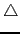

suivant: Les différents formes d'affichage
monter: Les commandes d'affichage :
précédent: Pour dessiner une figure
Table des matières
Index
couleur ou affichage peut avoir comme argument la forme de la
représentation des points 2D à l'affichage. Ces formes peuvent avoir des
traits plus ou moins épais selon la valeur de n de
point_width_n.
La représentation des points 3D a comme forme un carré (c'est
point_carre) plus ou moins
gros selon la valeur de n de point_width_n.
Les différentes options sont :
- point_losange ou rhombus_point pour représenter un point par un petit losange
(),
- point_carre ou square_point pour représenter un point par un petit carré
(),
- point_croix ou cross_point pour représenter un point par
une croix (×) c'est la représentation par défaut,
- point_etoile ou star_point pour représenter un point par
une étoile (*),
- point_plus ou plus_point pour représenter un point par le
signe plus (+),
- point_point pour représenter un point par un point ( . ).
- point_triangle ou triangle_point pour représenter un
point par un triangle (),
- point_invisible ou invisible_point pour ne pas
représenter un point.
Les différentes épaisseurs sont :
point_width_1 ou point_epaisseur_1,point_width_2 ou
point_epaisseur_2...point_width_8 ou
point_epaisseur_8
Attention
Le nom couleur ou color ou affichage est aussi le nom d'un
paramètre que
l'on passe comme argument supplémentaire dans les commandes géométriques
lorsqu'il est suivi de =, puis de la valeur d'un attribut puis de
+, puis de la valeur d'un autre attribut etc...
On tape :
couleur(point(1+i),rouge+point_carre+point_width_3)
Ou on tape :
point(1+i,affichage=rouge+point_carre+point_width_3)
On obtient :
Le point (1+i) est dessiné en rouge à l'aide d'un petit carré
On tape :
affichage(point_carre)
On obtient :
après cette instruction, les points seront dessinés à l'aide d'un petit carré
suivant: Les différents formes d'affichage
monter: Les commandes d'affichage :
précédent: Pour dessiner une figure
Table des matières
Index
Documentation de giac écrite par Renée De Graeve